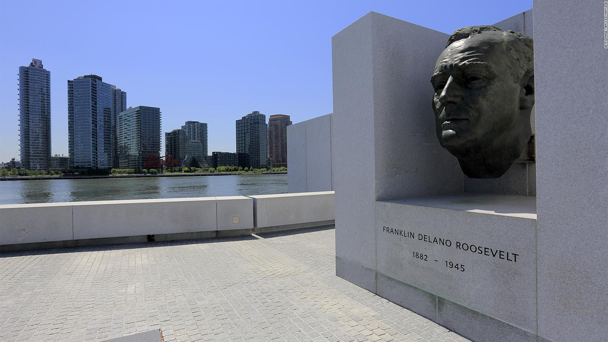

Welcome to Roosevelt Island
Visit Roosevelt Island!
Take A Day Trip!

On average, it takes about 40 minutes to an hour to
walk Roosevelt Island
from the northern most tip to the southern end. With an an aerial adventure,
a contemporary art gallery, and much more. Discover the best things to see
and do on Roosevelt Island, New York City.
The Roosevelt Island Historical Society
The Roosevelt Island Historical Society promotes awareness of the I
sland’s unique history and pursues preservation of its landmarks and
artifacts.
The purpose of the Society is to recover, maintain and disseminate the record of
Roosevelt Island’s heritage from Colonial times to the present. The Society aims to
achieve these goals as follows:
Collecting artifacts, documents, publications, photographs, prints and other
media recording the history of the island and its inhabitants.
Maintaining those collections and making them accessible to the public.
The Franklin D. Roosevelt Four Freedoms Park

The Franklin D. Roosevelt Four Freedoms Park, located on Roosevelt Island across from the United Nations, celebrates the life President Roosevelt. In his 1941 State of the Union speech, FDR addressed four freedoms that he suggested should be the expectation of everyone, worldwide: freedom of speech and expression, freedom of worship, freedom from want and freedom from fear. The park, opened in 2012, pays tribute to the significance of Roosevelt’s speech. Louis Kahn designed the site in a triangular shape to draw focus toward the southern tip of the island, which is where a bronze bust of Roosevelt by Jo Davidson is located. For more information click here.
Works Cited:
Roosevelt Island Historical Society Visitor Center Kiosk. (2020). Inspirock.com. https://www.inspirock.com/united-states/new-york-city/roosevelt-island-historical-society-visitor-center-kiosk-a1279770251
Goicochea, J. (2018, January 24). The Best Things to See and Do on Roosevelt Island, NYC. Culture Trip; The Culture Trip. https://theculturetrip.com/north-america/usa/new-york/articles/best-things-see-roosevelt-island-nyc/
PLAN
YOUR
VIST